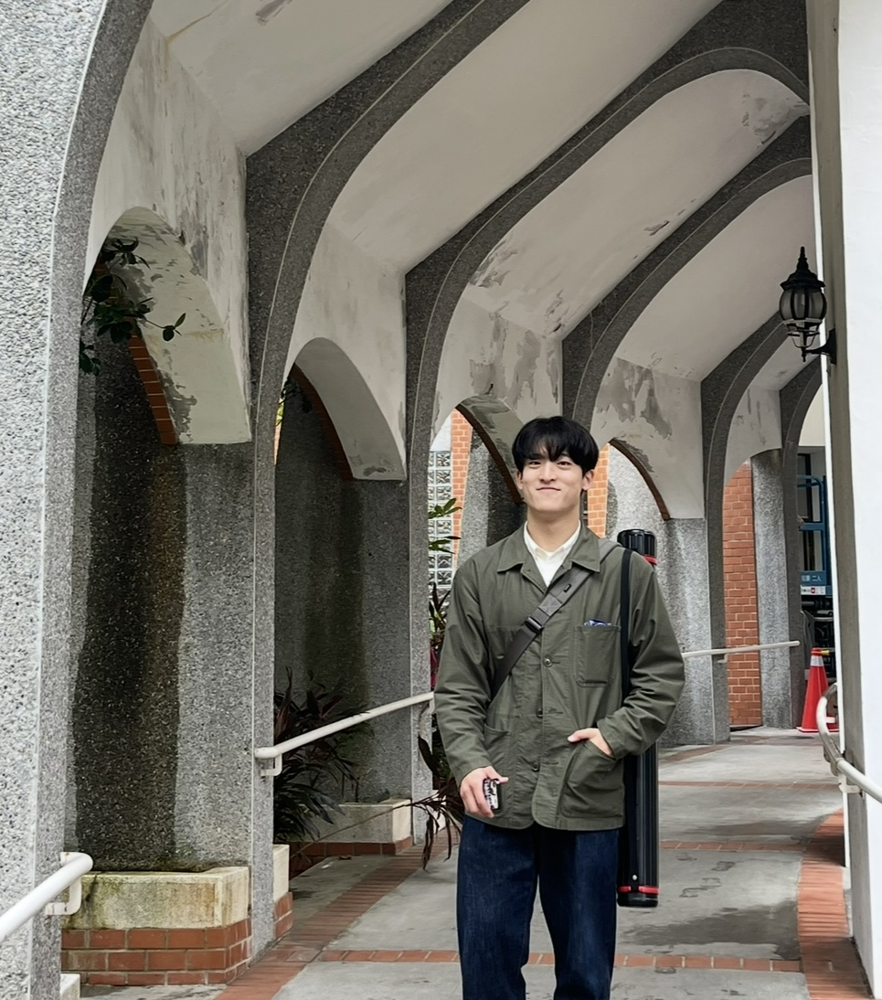

|
Junhee Kim
I’m an M.S. student in Statistics & Data Science at
INHA University. My research focuses on Bayesian Machine Learning and Probabilistic AI models to quantify prediction uncertainty for complex data, such as multi-channel gas sensors and brain connectivity graphs.
I am a Graduate Research Assistant at the Bayesian Inference Lab, Inha University. I previously worked as an Undergraduate Research Intern at the Human Computer Interaction Lab and the Bayesian Inference Lab at Inha University.
Email
/
CV
/
Github
/
Blog
/
Google Scholar
/
LinkedIn
|

|
Education
Inha University
M.S. in Statistic & Data Science (GPA: 4.40/4.50 now)
Bayesian Statistics Lab. (Advisor: Seongil Jo)
Feb. 2025 - Feb. 2027 (expected)
Inha University
B.S. in Statistics (GPA: 4.14/4.50)
Interdisciplinary Major in Software Convergence Engineering
Mar. 2019 - Jul. 2023
|
Experience
Graduate Research Assistant
Bayesian Statistics Lab, Inha University, Dept. of Statistics
Feb. 2025 - Present
• Researching and applying Machine Learning and Deep Learning methodologies to complex data such as multi-channel gas sensors and brain connectivity graphs.
• Specializing in Bayesian ML and Probabilistic AI Models to quantify prediction uncertainty and build more reliable systems.
• Teaching Assistant for undergraduate lab sessions: Data Visualization Lab (Spring 2025) and Regression Analysis Lab (Fall 2025).
Undergraduate Research Intern
Human Computer Interaction Lab, Inha University, Dept. of Computer Engineering
Sep. 2023 - Jul. 2024
• Conducted research on applying deep learning models to various real-world sensor data (vibration, accelerometer, etc.).
• Responsible for the end-to-end development pipeline, from sensor data collection and preprocessing to model implementation and system deployment on edge devices.
Undergraduate Research Intern
Bayesian Statistics Lab, Inha University, Dept. of Statistics
Jul. 2024 - Feb. 2025
• Researched and implemented advanced statistical models, including Bayesian methods and Graphical Model.
• Focused on applying probabilistic approaches to solve complex prediction and analysis problems.
|
Publications & Presentations
Publications
Predicting Flatfish Growth in Aquaculture Using Bayesian Deep Kernel Machines
Junhee Kim, Seong-Won Seo, Ho-Jin Jung, Hyun-Seok Jang, Han-kyu Lim and Seongil Jo
Applied Sciences, Aug. 2025
Research on Driving Pattern Analysis Techniques Using Contrastive Learning Method
Hoe Jun Jeong, Seung Ha Kim, Junhee Kim, Jang Woo Kwon
Journal of the Korea Institute of Intelligent Transport Systems, Feb. 2024
Presentations
Bayesian Kernel Ridge on GAT Embeddings for Molecular Prediction
BayesComp 2025, Singapore (Poster Presentation), Jun. 2025
Predicting Movement Paths in Search and Rescue Operations Using RL
The 12th IASC-ARS Conference, Taipei, Taiwan (Poster Presentation), Dec. 202
Driver Drowsiness Detection System Improving SwinTransformer
2024 ITS Korea Spring Conference, Undergraduate Session (Oral Presentation), Dec. 2023
|
Awards
-
2025 Inha AI Challenge
Grand Award at Inha University AI Convergence Research Center, Jul. 2025
-
2025 LG Aimers On Offline AI Hackathon Finalist
Finalist 7th, Apr. 2025
-
Anomaly Detection in Driving Patterns Using Contrastive Learning
Best Paper Award 2023 ITS Korea Fall Conference, Aug. 2024
-
Road Surface Detection System using Smartphone Accelerometer Sensors
Bronze Prize at Fall 2023 Vertically Integrated Projects Presentation, Dec. 2023
|
Skills
Programming Languages: Python, R
ML/DL Frameworks & Libraries: PyTorch, TensorFlow, Scikit-learn, Pandas, Polars, Scipy
Tools & Platforms: Git/GitHub, Docker, VS Code, RStudio, Notion
|
|
{kind=link}